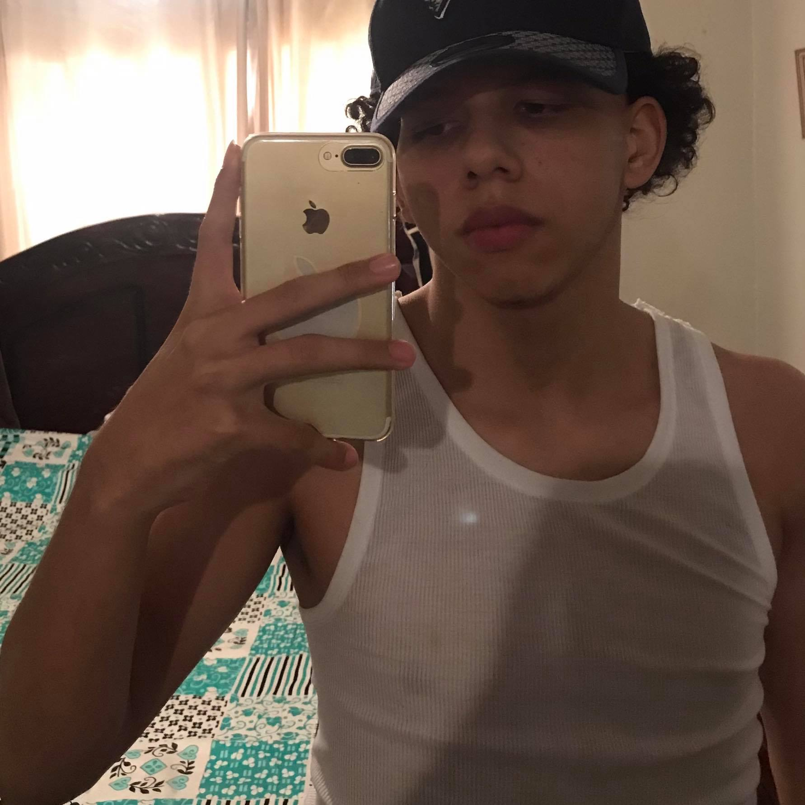

Este Soy Yo
">
Soy Justin Dominique Marte Sosa, soy o me considero una persona amable, amigable no tan asociable
tratando de mejorar en ese aspecto, Soy el hermano mayor de 3 hermanos, 2 hembras y yo el varon,
me gusta el beisbol, lo jugba antes pero por varios motivos deje de jugarlo.
Me gusta pasar tiempo en familia, compartir con amigos y salir a conocer lugares, por otro lado
me gusta comer, me encanta la comida.